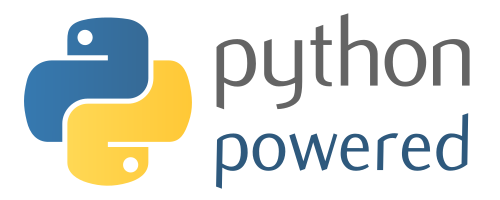
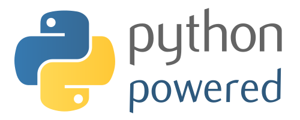

UPIITA - IPN - 2016
Bienvenidas(os)
 

Django + Python: Una opción fácil y rápida para hacer apps y servicios con poco código
Por: @rctorr (Ricardo Torres)
DjangoFriends
Somos una comunidad donde aprendemos y compartimos Django, Python, HTML5, CSS3, Javascript (JS), Diseño grafico, ideas, proyectos, comidas y todo lo que tenga que ver con el diseño y desarrollo tanto de sitios web como de aplicaciones web.
Python
- Es un lenguaje de programación interpretado
- Su filosofía hace hincapié en una sintaxis que favorezca un código legible.
- Multiplataforma
- Multiparadigma
- Orientación a objetos
- Programación funcional
- Promueve la simplicidad y la programación ágil
Python
http://python.org
http://learnpython.org
Python Package Index (79030)
Cactus: Generador de sitios estáticos
Python
¿Cómo ejecutar un servidor web para servir los archivos de la carpeta actual?
Python
Simple:
$ python -m SimpleHTTPServer 9000
¿Qué es Django?
Presentación simple en Scratch
Por @yunmmy19
Testimonio
Por @PathSanch
Django es...
- Framework
- Software libre
- Escrito en Python
- Patrón de diseño MVC (Modelo-Vista-Controlador)
- Meta: Facilitar la creación de sitios web completos (webapps)
- Promueve la reusabilidad y la extensibilidad
- Promueve desarrollo ágil y NO repitas
Django cuenta con...
- Un modelo que mapea la base de datos
- Un sistema de pantillas basado en etiquetas con herencia
- Un sistema de redirección de URLs
- Soporte de sesiones
- Soporte para internacionalización
- Django Channels (Abril 2016)
Django NO es...
- No es una IA
- No construye webapps sólo con decirle que vendo perfumes
- No crea código HTML5 y CSS3 por obra divina
- No crea bases de datos a partir del vacio
- No le es posible leer la mente de los programadores, diseñadores o clientes
¿Cómo usar Django?
- Determinar el proceso a desarrollar
- Análisis
- Diagrama del modelo de la base de datos
- Diagrama de un diagrama de flujo
- Diseño de las características principales de la webapp como si de un sitio web estático se tratara
- Crear la webapp en Django
¿Cómo crear la webapp en Django?
- Creación del proyecto
- Configuración
- Definición del modelo en base a Django
- Creación de la base de datos
- Creación del usuario administrador
- Ejecutando servidor local
- Verificar correcto funcionamiento
- Verificar panel de administración (si Django lo ha creado)
Comunidad de DjangoGirls
Turorial de DjangoGirls Español
- 22 Capítulos paso a paso
- Consola o terminal de comandos
- Python
- Editores de código
- Django
- Git y Github
- pythonanywhere.com
- Desplegar
Notas importantes
- Sitio principal de Django
- Hosting: Web Faction
- Hosting: Digital Ocean